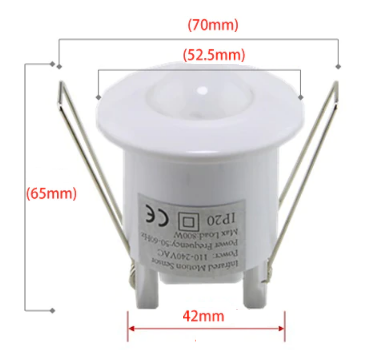
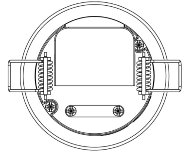
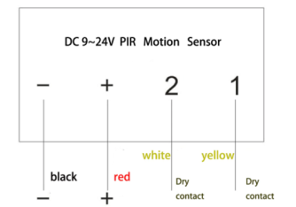
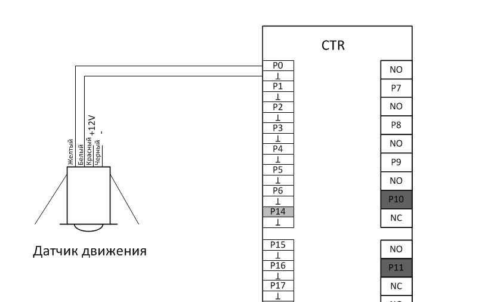
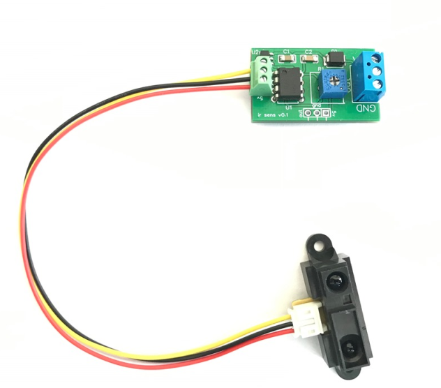
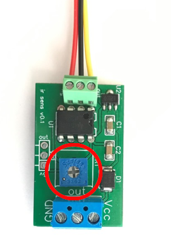
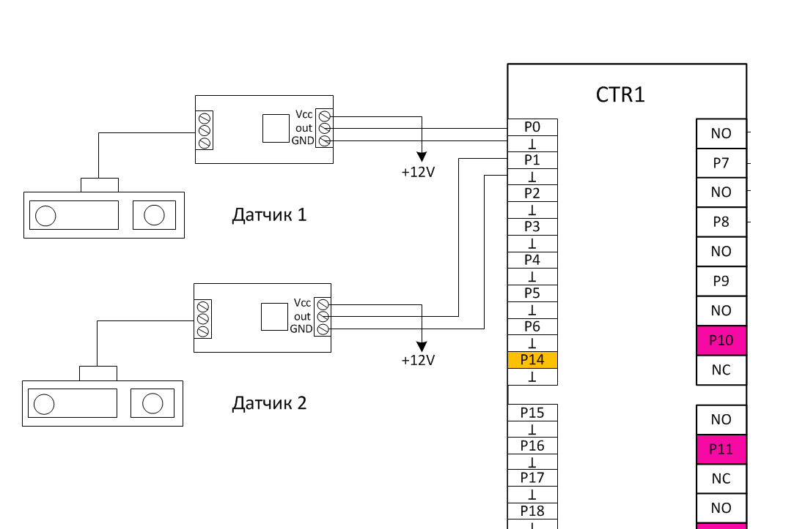
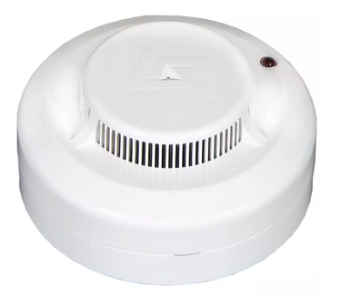
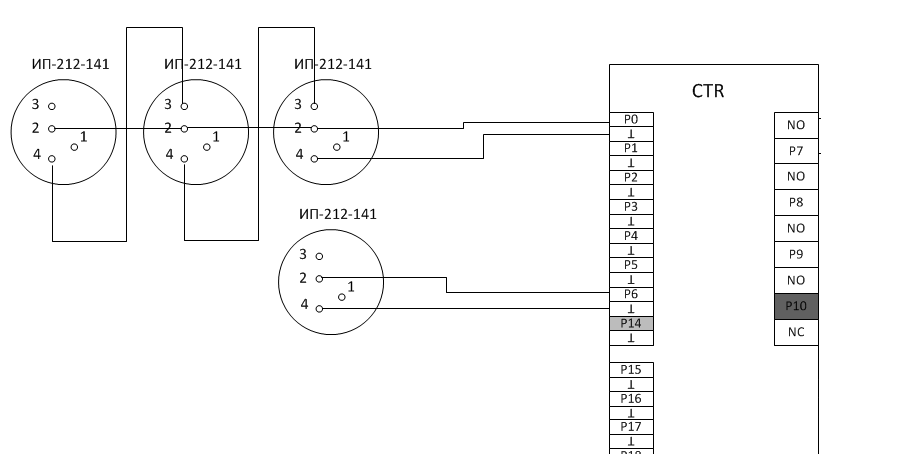

Подключение
Датчик движения
Датчик движения потолочного исполнения. Питание 12V. Сигнал срабатывания – сухой контакт. Питание можно использовать как с контроллера, так и с любого другого блока питания 9-24В. Датчик движения подключается в любой аналоговый вход P0-P6, P15-P21.
  
Схема подключения к контроллеру:

Датчик расстояния. Управление подсветкой лестницы

Для включения/выключения подсветки лестницы или для запуска сценария подсветки лестницы используются датчики расстояния. Датчики устанавливаются на заглушку, и прячутся в монтажную коробку в начале лестницы и в конце. К каждому датчику от контроллера нужно протянуть кабель UTP. Датчик подключается через модуль сопряжения, а на контроллер заводится на любой аналоговый вход контроллера. На модуле находится подстроечный резистор для калибровки расстояния срабатывания.
Характеристики датчика
| Электропитание | 12V |
| Расстояние срабатывания | 10-80см. |
| Протокол | NO |
| Способ монтажа | Скрытый, в монтажную коробку. |
Регулировка расстояния срабатывания

Схема подключения

Датчик дыма

Для подключения датчика к контроллеру требуется всего 2 провода. Датчик можно подключить к любому аналоговому порту контроллера Р0-Р6, Р15-Р21. Никаких дополнительных резисторов, диодов или чего бы то ни было еще - не нужно. Никакого дополнительного питания не нужно! К одному входу можно подключить до 4-х пожарных датчиков шиной. В этом случае первый сработавший датчик включает вход исполнительного модуля, а второй датчик (если дым до него еще не дошел) продолжит моргать в дежурном режиме. Если важно определить какой именно датчик сработал, то следует подключать каждый датчик к отдельному порту. Если же нужно определять только сам факт задымления, то можно подключать несколько датчиков к одному порту (до 4-х).
Схема подключения датчика:
